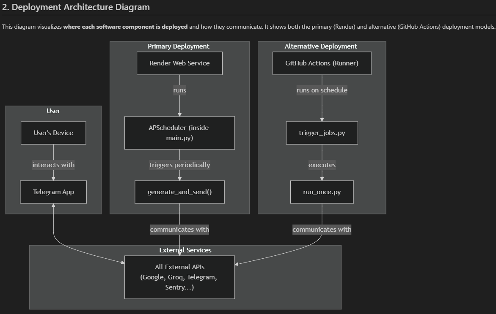
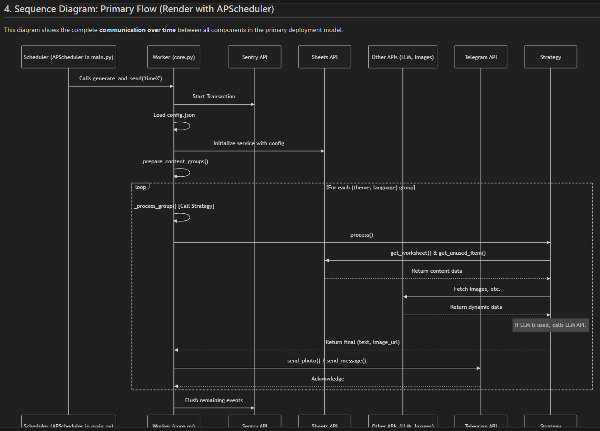
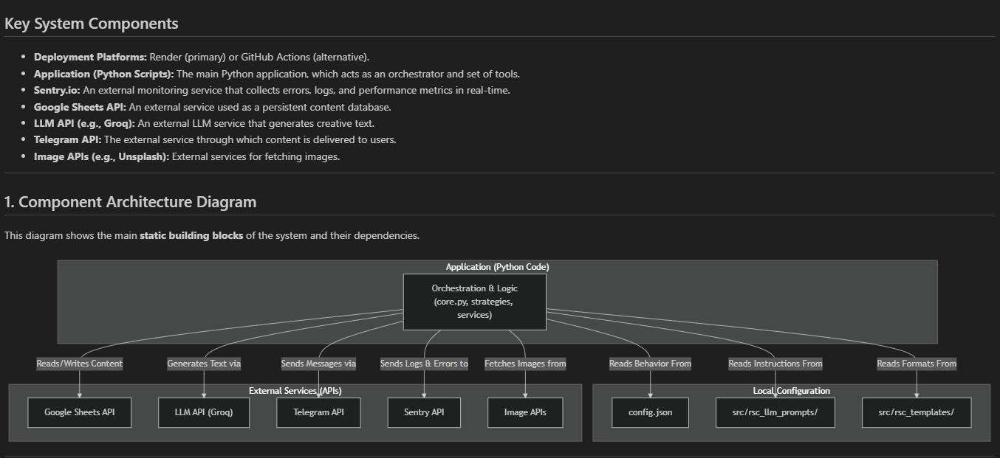

YourDailyPulse Developer Guide
This document provides a complete guide for setting up, configuring, deploying, and maintaining your own automated bot instance based on the YourDailyPulse project.

1. Overview
YourDailyPulse is a sophisticated, open-source platform for building automated bots that deliver personalized, multi-theme, and multi-language content. The application is designed for maximum flexibility, where nearly all behavior is driven by external configuration files rather than hard-coded logic.
Core Principles
- Config is King: All operational parameters (schedules, users, themes, data sources) are defined in
config.json. The application is merely an engine that executes this configuration. - Content as Data: All static content (quotes, verses, lessons) is stored and managed in an external database (Google Sheets), completely separating content from code.
- Strategy Pattern: The core logic is decoupled into "strategy" modules located in
src/prompt_type/. Adding a new content processing type is as simple as creating a new strategy file and updating the configuration. - Generate-Once, Distribute-Many: To conserve API costs and improve performance, content for each unique (theme, language) combination is generated only once per run and then distributed to all relevant users.
2. Architecture Deep Dive
The application follows a modular, event-driven architecture. The process is initiated by a scheduler, which triggers a series of orchestrated steps.

Execution Flow
- Trigger: A scheduler (either GitHub Actions or a local APScheduler) executes
run_once.pyormain.pywith a specific time key (e.g., `time1`). - Orchestration (
core.py): The `JobProcessor` class loadsconfig.json, identifies all active users subscribed to the current time key, and groups them by `(theme, language)`. - Strategy Dispatch: For each group, the orchestrator reads the theme's `type` from the config and dynamically calls the `process()` function from the corresponding strategy module in
src/prompt_type/. - Data Fetching & Processing (Strategy Execution): The chosen strategy module takes over. It uses services from
src/services/(like `sheets_service.py`) to fetch data, build a "payload," and, if necessary, call the LLM for text generation. - Delivery (
telegram_channel.py): The final, formatted content is sent to all users in the group via the Telegram API.
The application follows a modular, event-driven architecture. The process is initiated by a scheduler, which triggers a series of orchestrated steps.

3. Initial Setup
The application follows a modular, event-driven architecture. The process is initiated by a scheduler, which triggers a series of orchestrated steps.

3.1. API Keys and Credentials
Before you begin, register and obtain API keys/credentials from these essential services. You will need them for the .env and credentials.json files.
- Telegram: Create a bot via
@BotFather. - Google Cloud: Create a Service Account and enable **Google Drive API** and **Google Sheets API**.
- Groq: For the LLM that generates creative text.
- Sentry: For professional error logging and application monitoring.
- Optional Services: Unsplash (photos), Cloudinary (personal photos), OpenWeatherMap (weather).
3.2. Google Sheets as a Database
Your content resides in a set of logically separated Google Spreadsheets.
- Create Spreadsheets: Go to [sheets.google.com](https://sheets.google.com) and create the required spreadsheets (e.g., `YDP_System`, `YDP_LLM_Static_Spiritual`, etc., as defined in your `config.json`).
- Create Worksheets: Inside each spreadsheet, create the necessary worksheets (tabs) (e.g., `Jobs`, `BibleSk`, `Rotation`).
- Set Column Headers: For each worksheet, populate the first row with the exact column headers. You can find the required structures in the project's `docs/Google_sheets_examples/` directory.
- Share with Service Account: This is a critical step. For **each spreadsheet**, click the "Share" button and give **Editor** permissions to the `client_email` address found in your `credentials.json` file.
4. Configuration Deep Dive
The entire application is controlled by three key files in your project root.
4.1. .env File
This file stores your secret API keys. Rename .env.example to .env and paste in the keys you obtained.
.gitignore file is configured to ignore .env. Never commit this file to your repository.4.2. credentials.json
This is the key to your Google Service Account. Place the file you downloaded from Google Cloud directly into your project's root directory.
4.3. config.json - The Brain
This is the central control file. It is divided into several key sections:
schedule: Defines the time keys (e.g., `time1`) and their corresponding execution times (e.g., "06:00").users: A list of all users who can receive content. Each user has a unique `description`, `language`, `chat_id` (identifier), and a `subscriptions` object that maps time keys to a list of theme names.themes: Defines every available content theme, its processing `type`, its data source, and the path to its prompt or template file.data_sources: A hierarchical catalog of all your Google Spreadsheets. It maps logical spreadsheet keys (e.g., `YDP_LLM_Static_Spiritual`) to their actual `spreadsheet_url` and contains a nested map of logical worksheet keys to their physical names. This structure eliminates redundancy and makes configuration clean and easy to maintain.
5. Local Testing
Always test your configuration locally before deploying.
- Set up Virtual Environment:
# Create and activate the environment python -m venv .venv # On Windows: .venv\Scripts\activate # On macOS/Linux: # source .venv/bin/activate # Install dependencies pip install -r requirements.txt - Run a Test Job with
run_once.py:Therun_once.pyscript is your primary tool for debugging. It allows you to trigger a specific job for a specific user, giving you isolated and predictable results.# Run the 'time2' job for a single user named 'Jozef_D' python run_once.py time2 users Jozef_D
6. Deployment via GitHub Actions
The project is designed for serverless deployment using GitHub Actions, which is free for private repositories within generous limits.
6.1. Configure GitHub Secrets
This is the most critical step for a secure deployment.
- In your private GitHub repository, navigate to Settings > Secrets and variables > Actions.
- Click New repository secret.
- Create a secret for each variable in your
.envfile. For theGCP_SA_KEYsecret, paste the **entire content** of yourcredentials.jsonfile.
6.2. Push and Go Live
Commit and push all your configured files (except .env and credentials.json) to your `main` branch. The GitHub Actions workflow defined in .github/workflows/scheduler.yml will automatically pick up the changes and start executing your bot on the defined schedule.
7. Management & Tools
The project includes a powerful command-line script, tools.py, for various data management tasks.
download_sheets
Downloads a local backup of every worksheet from every configured spreadsheet into a structured, timestamped directory. Essential for backups.
python tools.py download_sheets ./backupsgenerate_photo_db
Connects to your Cloudinary account and generates a CSV file of your photos, ready for import into your `FamilyPhotos` Google Sheet.
python tools.py generate_photo_db my_cloudinary_folder photos_for_import.csvfetch_art_data
Fetches public domain artwork data from The MET API for a specified department and saves it to a CSV.
# Fetch 50 paintings from the European Paintings department (ID 11)
python tools.py fetch_art_data 11 met_paintings.csv met_ids.csv 508. Extending the Bot
The Strategy Pattern makes extending the bot incredibly simple.
How to Add a New Content Type (e.g., a "Quote of the Day")
- Create a New Strategy File: In
src/prompt_type/, create a new file, e.g.,quote_of_the_day.py. This file only needs aprocess(theme_config, lang)function. - Add a New Template: In
src/rsc_templates/, create a new template file, e.g.,quote_of_the_day_slovak.txt. - Prepare Your Data: Create a new Google Sheet for your quotes and share it.
- Update
config.json:- Add the new spreadsheet to your `data_sources`.
- Create a new theme in the `themes` section with `type: "simple_static"` (or another type) and point it to your new data source and template file.
- Done! The bot will automatically pick up the new theme. No changes to the core application logic are required.